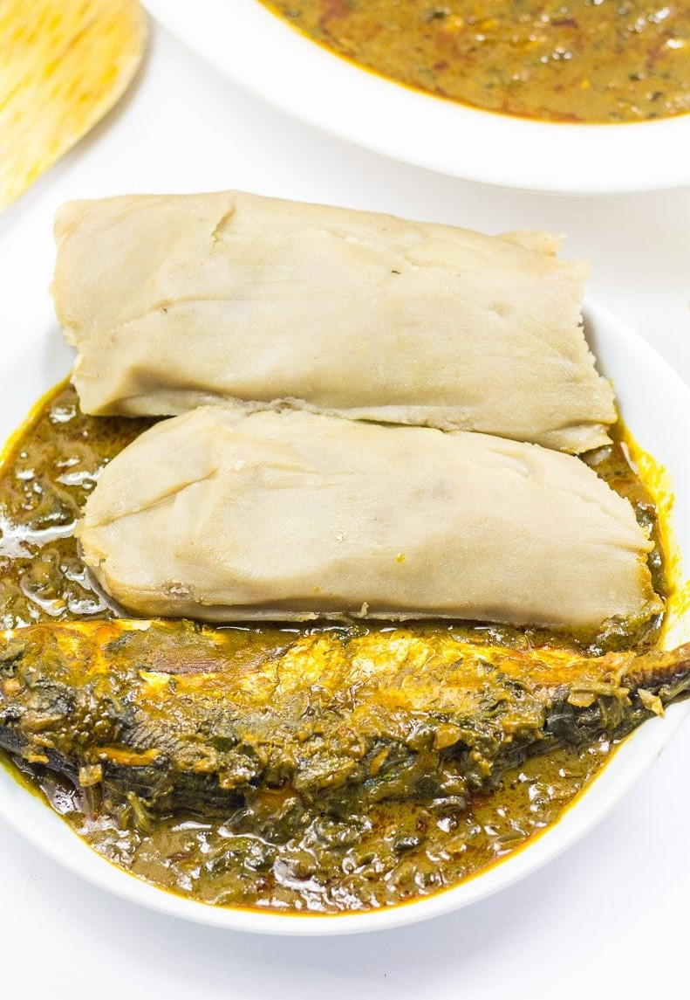

Kwacoco Banga Soup

Kwacoco Banga Soup, a traditional meal from the Southwest part of Cameroon
It is the traditional meal of the Bakweri people from the southern part of cameroon and it is also
called Timanambusa. It is quite a ceremonious meal.
Ingredients
- 6 medium Cocoyams
- treated Plantain leaves
- 1kg of palm nuts
- Boiled Beef
- smoked fish and/or stock fish
- Beef cubes
- Salt
- Pepper
- Ground onion
- Ground crayfish
Steps
- Peel, wash and grate cocoyams into a paste. If cocoyams are too dry, you may need to add a bit
of water to the paste and mix well (use a wooden spoon as cocoyams will cause a short lasting itching)
- Add a pinch of salt and mix
- wash treated plantain leaves (treat by passing over an open flame to make them supple)
and wrap the paste as demonstrated in the post “Kwacoco Bible” on this blog.
- place the wrapped cocoyam paste in an iron pot lined with plantain leaves and boil for about 1h 30mins to 2hrs adding water as it dries up until kwacoco is done.
- Wash and boil palm nuts (Mbanga) until tender and strain out water.
- Pound in a mortar using a pestle until it looks like the picture below.
(Please do not crush the kernels)
- scoop out the pounded palm nuts and place in a bowl.
- Pour in some warm water. Mix up with your hand (as if mixing dough)
so the pulp mixes properly with warm water.
- Sieve out the water (now mixed with pulp) into a sizeable pot and repeat the previous step until all
the pulp is washed off the Kernels and chaff.
- Place pot of soup on the fire, add in washed and cut stock fish, beef and allow to boil.
(Pls do not cover the pot as the soup may foam and spill over.
- when the pot gets boiling, add in some salt and beef cubes to taste , some ground onion and pepper as desired.
As the soup boils, the level begins to decrease and the consistency thickens.
- When Soup has boiled for about 1hr, you will notice that palm oil now floats at the top of the boiling soup.
Add in some crayfish and smoked fish (only added now so it does not scatter into pieces from the long cooking time)
- Adjust taste and your Mbanga soup is ready.
- Serve it hot with Kwacoco